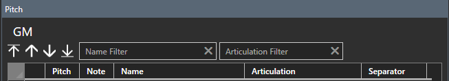
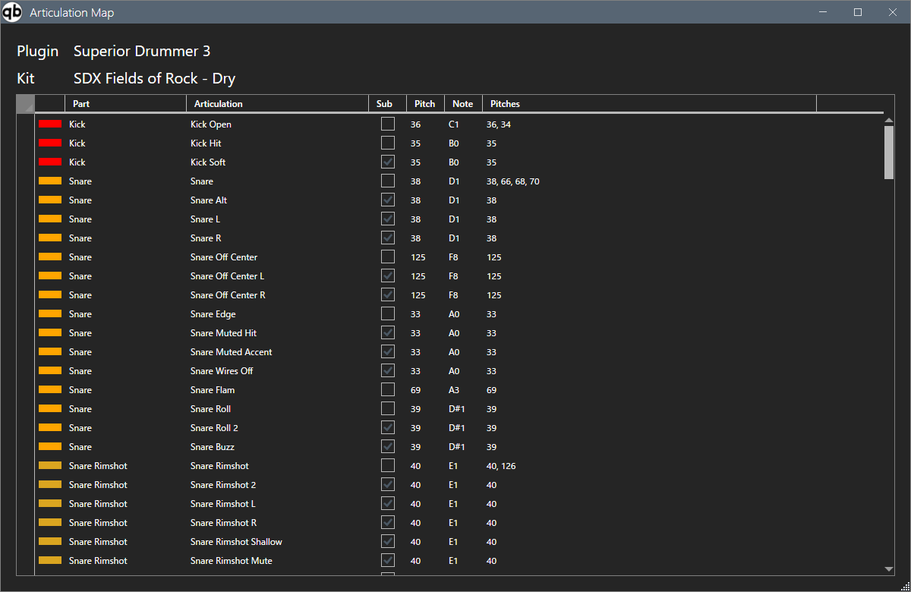

Plug-in
Modifie la Drum Map.
Modifier la mappe de batterie
Définir les informations sur le plug-in et le kit.

- Sélectionnez un plug-in dans la liste des plug-ins. Ajoutez le plugin s'il n'est pas présent.
- Sélectionnez un kit dans la liste des kits. Si vous n'avez pas de kit, ajoutez-en un.
- Configurez la carte à l'aide de la liste des emplacements.
Liste de hauteurs
Définissez les informations de mappage de batterie définies dans VST (source sonore de batterie).

-
Nom
- Saisissez le nom du pas. S'il est vide, la hauteur ne sera pas définie.
-
Articulation
- Ouvrez l'écran de sélection d'articulation à partir du bouton de recherche et sélectionnez celle qui convient.
-
Séparateur
- Sélectionnez celui approprié dans la liste déroulante. Filtre
Filtrer par nom de hauteur et nom d'articulation.

Vous pouvez spécifier un caractère générique à l'aide d'un astérisque (*).
- Si non spécifié, correspondance exacte
- Si placé au début du mot-clé, correspond au suffixe
- Si placé à la fin du mot-clé, correspond au début
- Si placé avant ou après le mot-clé, correspond partiellement
Trier
- Entrez chaque élément de la ligne de pitch applicable.
-
Vous pouvez modifier l'ordre de tri en cliquant sur l'en-tête de la colonne.
- Le premier clic le triera par ordre croissant, le deuxième le triera par ordre décroissant et le troisième le ramènera à l'état initial.
- Certaines fonctions d'édition sont limitées dans l'état trié. Si vous souhaitez le modifier, veuillez le remettre à son état initial.
Sound Check

Cliquer sur l'icône du haut-parleur dans chaque ligne de la liste de hauteurs enverra des messages d'activation/désactivation de note pour cette ligne au port MIDI.
Menu contextuel
Affiché par un clic droit sur la liste des pitchs.

Carte d'articulation
Affiché lorsqu'il est appelé depuis le menu contextuel. Ici, vous pouvez voir quelles hauteurs sont attribuées à quelles articulations.

Affiche la hauteur associée à l'articulation.
Les éléments cochés dans la colonne Sub sont des hauteurs automatiquement interpolées.
Options du plug-in

-
Vitesse de vérification du son
- Définit la valeur de vélocité de note émise lorsque le bouton de vérification du son est enfoncé. Entrée
-
fixe Activer le MIDI
- en pas fixe.
-
MIDI In Device
- Sélectionnez le port auquel le clavier MIDI est connecté. Si cela n’est pas obligatoire, veuillez sélectionner vide. Si disponible, « Connecté » s'affichera ; s'il n'est pas disponible, « Non connecté » s'affichera.
-
MIDI In Fixed Pitch
-
Spécifie la hauteur des messages d'activation/désactivation des notes du clavier MIDI à accepter.
Si vous spécifiez cette valeur et activez "Entrée fixe", L'entrée du clavier MIDI est convertie en message d'activation/désactivation de note sélectionné dans la liste de hauteurs et en sortie.
-
Spécifie la hauteur des messages d'activation/désactivation des notes du clavier MIDI à accepter.
-
Périphérique de sortie MIDI
- Sélectionnez la destination de sortie du message MIDI. Si disponible, « Connecté » s'affichera ; s'il n'est pas disponible, « Non connecté » s'affichera.